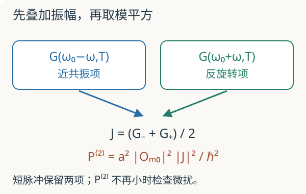

本页目录
研究课程 10 · 弱驱动谱学：怎样从跃迁读出量子度量
先修：量子几何张量、响应谱与矩阵元、含时微扰。目标：写清驱动振幅、频率、观测时间和谱权重，理解一个量子几何测量协议为何成立及何时失效。
1. 知道波函数公式，和在实验里测出它，是两件事
上一讲给出
这要求一个孤立、归一化的能量本征态。实验通常不直接读取 \(\partial_\lambda u\)，却能轻轻摇动参数，测系统从初态离开的速率。核心问题变成：怎样把跃迁矩阵元的权重与能隙分母组合起来？
令 \(\lambda(t)=\lambda_0+a\cos\omega t\)，\(a\) 很小，保留一阶驱动
\(a\) 与 \(\lambda\) 同单位，\(O\) 的单位是能量除以参数单位。这里用的是正号驱动；若要与上一讲的 \(H'=-fB\) 对照，取 \(f=-a\cos\omega t,B=O\)。不能在振幅和相位比较时忘记这一步。
2. 有限时间先算振幅，不先假定黄金律
从基态 \(|0\rangle\) 出发，设 \(\omega_{m0}=(E_m-E_0)/\hbar>0\)。一阶激发振幅为
定义 \(G(\nu,T)=Te^{i\nu T/2}\operatorname{sinc}(\nu T/2)\)，其中 \(\operatorname{sinc}x=\sin x/x\)、\(\operatorname{sinc}0=1\)。将余弦拆成两项：
两项之间有干涉，不能在短脉冲时先把概率相加。共振附近、\(\omega_{m0}T\gg1\) 时第一项占主导，得到熟悉的 sinc 平方峰；精确到此微扰阶的实验模型仍保留第二项。
所谓 \(P^{(2)}\) 是概率的最低非零阶估计，不是任意振幅或时间下的精确概率。若它算出大于一，应该判定微扰已失效，而不是把数值截成一后继续当作正确模拟。

3. 长时间窄峰极限，才出现频率 delta 函数
在分布意义下 \(|G(\nu,T)|^2/T\to2\pi\delta(\nu)\)。对基态正频率激发，得到黄金律
这条式子使用角频率 \(\omega\)，不是普通频率 \(f=\omega/(2\pi)\)。delta 函数的单位与变量变换因子不能省略。孤立两能级在严格共振下最终出现相干 Rabi 振荡，并不存在永远线性增长的激发概率；黄金律表示弱驱动、合适时间窗及谱分辨意义下的结果。
对频率谱加 \(1/\omega^2\) 权重后，能隙分母恰好出现：
因为 \(\hbar^2\omega_{m0}^2=(E_m-E_0)^2\)，\(\hbar\) 正好抵消。右边单位为参数单位的负二次方。这里的无穷积分是一条理想谱权重关系；有限窗口、低频杂散信号和额外能带都会影响估计，尤其 \(1/\omega^2\) 会放大低频背景。
协议不能混用。 上式固定参数振幅 \(a\)。文献也可能使用随频率改变的位移振幅或驱动强度，从而报告不带这个显式权重的积分。比较实验前先把实际 \(V(t)\) 写成同一形式，再核对因子。周期驱动提取量子度量的原始研究
4. 两能级算例：直接把几何与谱权重对上
沿用 \(H=(\Delta/2)\mathbf n(\theta,\phi)\cdot\boldsymbol\sigma\)，在固定 \(\theta\) 下调制 \(\phi\)。由于 \(\partial_\phi\mathbf n\) 与 \(\mathbf n\) 正交，带间矩阵元满足
取 \(\hbar=\Delta=1\) 作为实验单位，角频率单位为 \(\Delta/\hbar\)，时间单位为 \(\hbar/\Delta\)。默认 \(\theta=\pi/2,a=0.05,T=20,\omega=1\)。\(g=0.25\)，共振旋转波近似给 \(P\approx a^2gT^2/4=0.0625\)；保留反旋转项后约为 \(0.064959\)。差别来自有限观测窗，不说明几何公式失效。
先预测：把脉冲时长加倍，共振概率的最低阶估计和峰宽分别怎样变化？实验默认参数见上。先在小激发区域比较精确到该微扰阶的双频振幅与只保留共振项的结果，再增加驱动幅度观察失效提示。
图中纵轴明确为二阶微扰估计；显示值超过 0.1 时提示需要检查高阶效应，超过一时明确不是合法概率。0.1 是教学提示阈值，不能作为所有系统统一的误差保证。真实 Hamiltonian \(H(\phi_0+a\cos\omega t)\) 还有被省略的高阶参数导数；本实验只模拟写出的线性化驱动。
5. 进一步测非对角分量，需要另一组实验
若同时沿两个参数作同相驱动 \(a(\partial_1H+\partial_2H)\cos\omega t\)，将加权谱面积乘以同一个归一化因子 \(2/(\pi a^2)\) 后给出 \(g_{11}+g_{22}+2g_{12}\)；相反方向则给 \(g_{11}+g_{22}-2g_{12}\)。两者相减后除四，可提取交叉度量。需要分别校准两个参数的振幅与单位。
相差四分之一周期的驱动还可探测矩阵元的虚部，从而连接 Berry 曲率，但要明示驱动方向和圆偏振的符号。多体体系中，用非简并多体基态与多体激发谱定义的几何，和单粒子 Bloch 能带的度量并不自动相同。多体谱学推广
回到上一讲的 CoSn、黑磷或 2026 年平带研究时，应先识别：那里采用的是光电子谱重建、周期驱动跃迁率，还是多体输运响应。三者都能涉及几何，但不是同一种观测协议；本讲也没有复现这些材料实验。
6. 迁移题
题一。 固定小振幅，近共振区将 \(T\) 加倍，旋转波最低阶峰顶与第一个零点的失谐如何变化？
从振幅积分推导
峰顶 \(P\propto T^2\)，变为四倍；sinc 的第一个零点满足 \(|\omega-\omega_0|T/2=\pi\)，失谐减半。总谱峰变窄，所以不能仅凭峰顶增高推断度量增大。
题二。 用固定振幅 \(a\) 测得激发率后，只积分 \(\int\Gamma(\omega)d\omega\) 能直接得到度量吗？
检查缺失的能隙权重
一般不能。它给矩阵元平方之和，缺少 \((E_m-E_0)^{-2}\)。本讲协议要求积分 \(\Gamma/\omega^2\)，再乘 \(2/(\pi a^2)\)。只在额外知道所有跃迁具有同一能隙等特殊条件下，才能用一个常数补回权重。
速查与研究边界
有限脉冲先算振幅积分；黄金律是弱驱动的窄峰极限；量子度量对应指定协议下的加权跃迁谱。几何矩阵元、有限时间动力学与真实材料响应三层条件应分别核对。核查：2026-09-08。